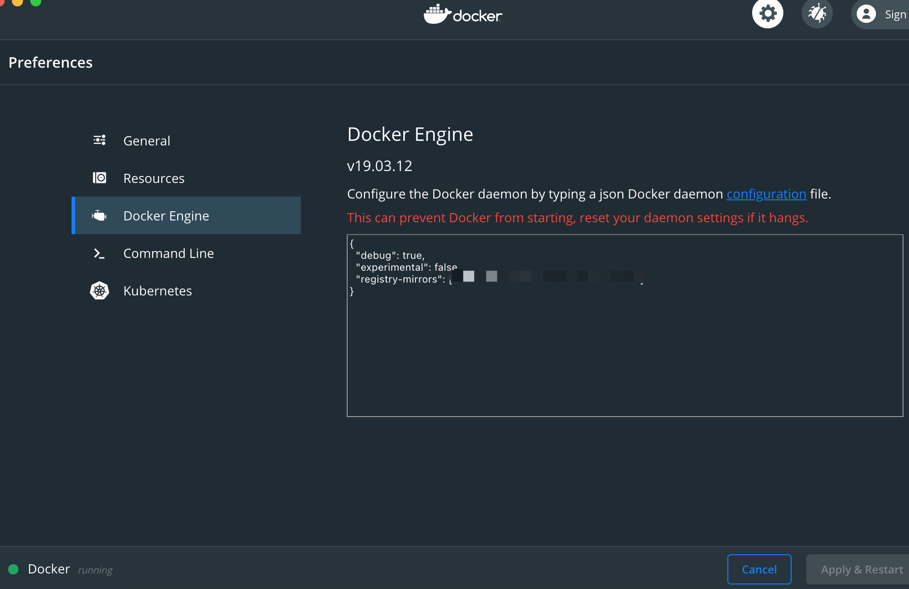

Mac环境配置
由于我的Mac使用了brew管理相关组件，使用brew安装docker就可以了
brew cash install docker
安装完毕后
运行brew verison应该会正常显示docker的相关信息，由于docker安装的时候hub默认为hub.docker.com，国内访问比较缓慢，为了更好的开发效率，进行国内镜像配置，具体可以自行google，推荐 阿里云、网易云等开源服务

项目调整
- 在项目所属的pom文件内添加docker相关maven插件
1 | <!-- Docker maven plugin --> |
- 在相关项目路径src/main/resources/docker 下 创建Dockerfile文件，例如
1 | FROM java:8 |
- 创建镜像
由于我的项目是多模块项目，需要先进行jar的相关编译打包，后进行docker镜像创建，分为两部
1 | mvn package -Dmaven.test.skip=true |
后在相关模块内再执行
1 | mvn docker:build |
如果是单项目则直接可以执行
1 | mvn package docker:build -Dmaven.test.skip=true |
- 导出镜像
由于生产环境可能对于docker的支持不够充分，特别是私有hub管理容器之类的，此时需要手动导出相关镜像，在生产环境手动导入
docker images后会列出你已经编译好的镜像id，我们需要进行相关的导出，此处有坑，如果使用默认save则导入生产环境的时候你的REPOSITORY 和 tag 都会是
docker save -o ./target/打包名.tar REPOSITORY:tag
- 生产导入
生产环境也必须具备docker环境，将镜像包上传后进行收工导入
docker load -i 打包名.jar ，导入完毕后执行 docker images 确认是否与开发环境一致
- 启动
由于docker可以启动多个镜像实例，所以启动命令比较复杂
sudo docker run --name 8001 -d -e "SPRING_PROFILES_ACTIVE=pre" -p 8001:8000 -v /data/logs/8001:/data/logs REPOSITORY:tag
说明：
–name 代表容器名，便于定位是哪个实例
-d 后台运行
-e 环境变量，由于我是springboot项目，我可以动态指定我配置文件生效的标签
-p 对外暴露端口关联 宿主机端口:容器实例端口
-v 映射卷，项目日志想挂载出来 宿主机的 /data/logs/8001 对应容器的/data/logs
在测试环境启动遇到问题，现象为 在容器内可以访问该端口接口，在宿主机和其他机器都无法访问。STFW后确认了应该是网卡问题，按照方法进行了网卡重新生成
1 | 停止服务 |